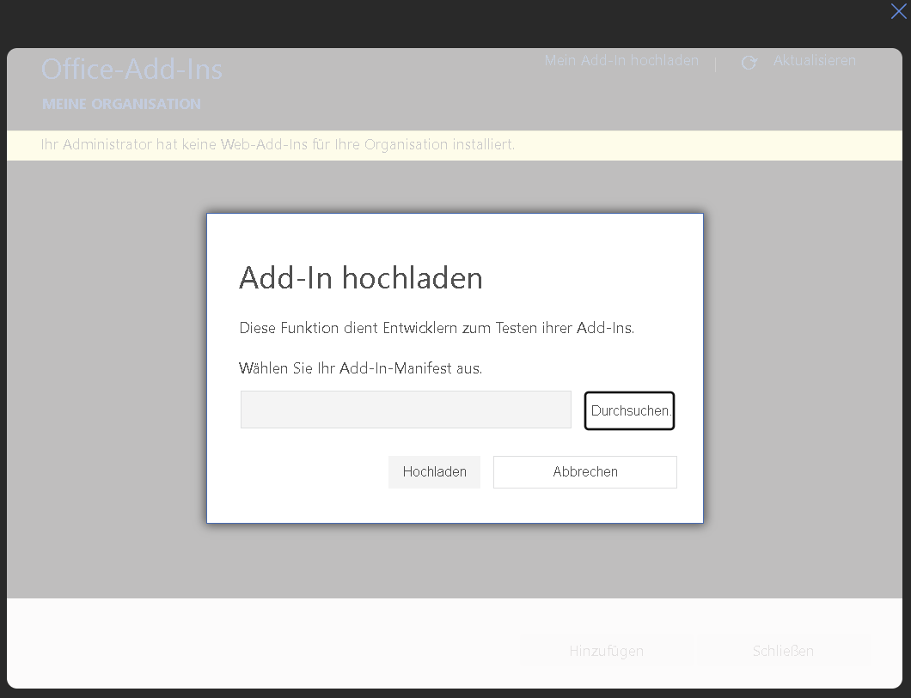
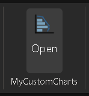

Testing the Prototyp
-
Download the Manifest
Download the manifest file of the Add-in: Download manifest.xml - (right-click → Save as) -
Open Word Online
Open any document in Word Online. -
Upload the Add-in

Click on the Add-in tab in the ribbon. In the Add-ins section open My Add-ins and select Upload My Add-in. Choose the downloaded manifest.xml and confirm the upload. -
Start the Add-in

After the upload a new tab appears in the Insert tab in the ribbon. Click the button there to open the prototype.
Developing the Prototyp
-
Clone the Repository
Clone the project from GitHub:git clone https://github.com/emirguerk/Praxisprojekt_SO_2026.git -
Install Dependencies
Navigate into the project folder and install all dependencies:npm install -
Generate Certificates
Generate the local HTTPS certificates required for Word Online:
Move the generated certificate files into the private/certs folder.npx office-addin-dev-certs install -
Build the Project
Build the application:npm run build:app -
Start the Server
Start the local development server:npm run start:server -
Download the Local Manifest
Open the following URL in your browser to download the local manifest:
Upload the downloaded manifest.xml to Word Online as described in the Testing section.https://localhost:3000/manifest/download